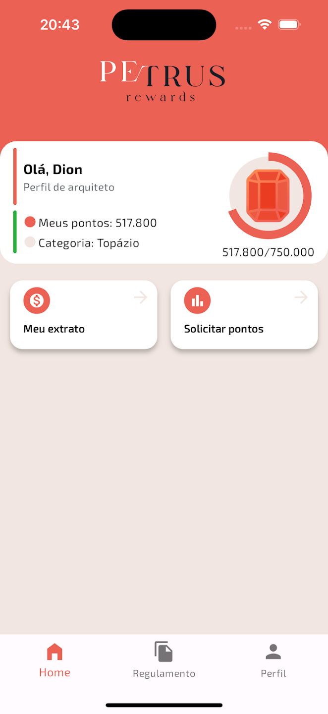

Petrus Rewards – Sua Jornada para Grandes Conquistas
Petrus Rewards é o programa oficial de recompensas do Grupo Perin que premia você por suas compras!
Basta solicitar a nota fiscal de seus produtos adquiridos nas lojas físicas do grupo e cadastrar no aplicativo.
Acumule pontos Petrus e participe de sorteios incríveis ao final de cada ano.
Como funciona?
- Compre e solicite a nota fiscal em qualquer loja do Grupo Perin.
- Registre suas notas fiscais no aplicativo para acumular pontos Petrus.
- Acompanhe sua categoria de pontos:
- Quartzo: 500.000 pontos
- Topázio: 750.000 pontos
- Diamante: Mais de 750.000 pontos
Benefícios do Petrus Rewards:
- Premiações exclusivas ao final de cada ano.
- Interface simples e intuitiva para registrar suas notas fiscais.
- Conquiste sua categoria e aumente suas chances de ganhar.
Não perca a chance de fazer suas compras valerem muito mais. Baixe o Petrus Rewards agora e comece a acumular pontos hoje mesmo!
Imagens do Aplicativo
